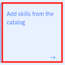
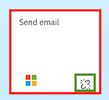
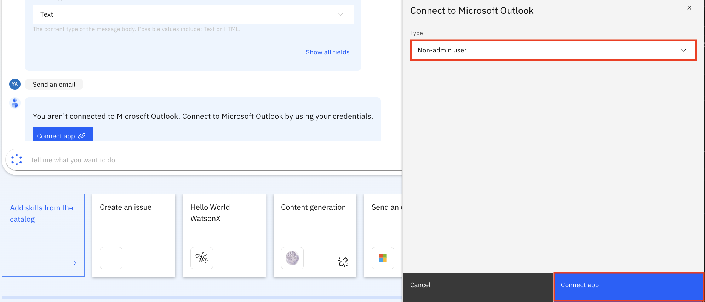
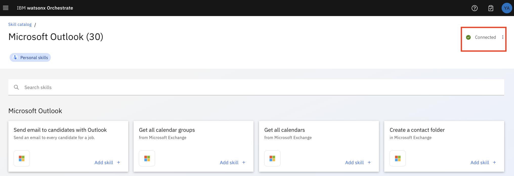
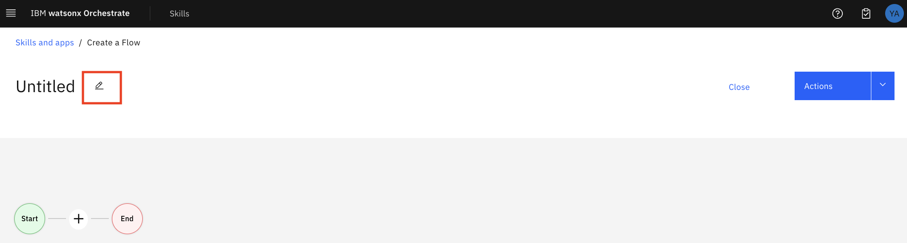

Lab3 Skill flow
このLabでは、GenAIで作成したコンテンツ生成のスキルと、Outlookでメールを送信するプリビルドスキルを組み合わせて、スキルフローを作成します。
前提条件
- watsonx Orchestrate の環境にアクセスできること。
- IBM-id を用いてログイン可能であること。
- スキルの作成、追加を行う権限があること。
- Outlook のメールアドレスとパスワード (講師から配布されます)
カタログからスキルを追加し、Outlookでメールを送ろう
Outlook でメールを送信するスキルは、プリビルドスキルとして既に watsonx Orchestrate にインポートされています。
このスキルを追加し、Microsoft Outlook に接続してテストする必要があります。
Outlook に接続してメールを送信できるようにするには資格情報が必要になります。今回の環境では、差出人として、自身のメールアドレスと資格情報を使用することはできません。
-
Chat に移動し Add skills from the catalog をクリックするか、左上のメニューに移動して Skills catalog を選択します。 
-
Microsoft Outlook を検索します。

-
Microsoft Outlook をクリックし、Send an email using Outlook の中で Add skill を選択します。 これで、このスキルは Added として表示されます。
-
Chat 画面に移動すると (Menu -> Chat) 、このセクションで追加された 2 つのスキルが表示されます。

-
これで、Send emaill スキルを追加するセクションは完了です。
自身のメールアドレスへメールを送り、スキルをテストしてみよう
このステップでは、スキルを Microsoft Outlook に接続します。 この資格情報は、講師から提供されます。
-
Chat 画面に移動します。
-
Send email スキルを選択します。右下にリンク切れのマークが表示されています。これは、スキルがどのメールシステムにも接続されていないことを意味します。
 -
リンク切れの (緑色のボックスで囲んだ)マークをクリックします。 スキルが Microsoft Outlook に接続されていないことが通知されます。 Connect app をクリックして Microsoft Outlook に接続します。

-
Type はデフォルト値の Non-admin user を使用し、Connect app ボタンをクリックします。 これにより、Outlookに移動します。 講師から提供される資格情報を使用します。 (今回の環境では、IBM のメールアドレスを使用して Outlook に接続することはできません)
 -
※パスワードは、ブラウザーやパスワード・マネージャーに保存しないようにご注意ください。

-
アプリが接続されたことが確認できます。 
-
スキルをテストするために Chat 画面に移動します。Send an email スキルをクリックします。
-
To: の欄はご自身のメールアドレスを使用します。Subject の欄に件名を記入します。（例:
Test send email skill）Content 欄はメール本文を入力します。（例:Hello and welcome!）Apply ボタンをクリックします。
-
The email was sentというメッセージが表示されます。ご自身のメールボックスにメールが送信されているか確認してみてください。 -
これで Send email スキルをテストするステップは完了です。
2つのスキルを組み合わせてスキルフローを作成しよう
これまでは、個々のスキルを作成、追加、テストを行いました。watsonx Orchestrate では、個々のスキルだけでなく、2つ以上のスキルを組み合わせて、スキルフローを作成することができます。 手順は以下のとおりです。
-
Menu -> Build -> Skills に移動します。
-
Add skills のドロップダウンリスト (∨) から Create an skill flow を選択します。

-
鉛筆 アイコンをクリックし、スキルフローに名前を付けます。(例: Generate content and send email - YourName)
YourName の部分は TaroYamada のようにすることをお勧めします。  -
自身の名前を含めてフローの名前を付けたら、説明 (Description) を追加して保存します。(例: TaroYamada's generate content and send email)

-
スキルを追加するには、+ をクリックします。Generate content を検索して、ご自身の YourName-Recommendation を選択します。
-
Microsoft Outlook をクリックすると、Outlook と連携して利用できるすべてのスキルが表示されます。 Send an email を探し Add Skill をクリックします。

-
これで、スキルフローが作成されました。全体像は以下のようになります。

-
生成されたコンテンツをメールで送信するために、1 つ目のスキルの出力を 2 つ目のスキルの入力にマップします。これを行うには、YourName-Recommendation をクリックします。 Input のタブを開き、パラーメーターを確認します。 他のスキルの出力をこれらのパラメーターにマップすることも可能です。 次に、Output のタブを開きます。ここでは text の形式で出力されるものが 1 つだけあります。
-
次に、Send an email をクリックしてinput と Output のパラメーターを確認します。
- パタ―ン１：自分でパラメーターの設定を行う
Input のタブを開き、パラーメーターを確認します。 他のスキルの出力をこれらのパラメーターにマップすることも可能です。


Input タブをクリックします。body.Content の欄をクリックすると、Available Mappingsの中に YourName-Recommendation スキルの出力が表示されます。YourName-Recommendation をクリックすると、スキルの出力の一覧とコンテンツの型（text, numeric など）が表示されるので、generated_text を選択します。
- パタ―ン2：自動でマッピング機能を使用する
Generate mapping suggestionsをクリックすると、手動で設定したパラメーターと同じgenerated_textが選択されます。 注意: 必ずご自身の名前が入ったスキルを選択してください。
注意: 必ずご自身の名前が入ったスキルを選択してください。 - パタ―ン１：自分でパラメーターの設定を行う
-
他にも、追加で制御できるオプションがあります。(例：エンドユーザーから見えないようにInput欄を非表示にする、など)
-
Actions -> Save as draft (2回目以降は Save) をクリックして、スキルフローを保存します。 以下のように正常に保存されたことが表示されたら、Close をクリックして編集画面を閉じます。

-
ご自身の名前を用いてスキルを検索します。

-
Enhance this skill を選択します。

-
watsonx Orchestrate がスキルを認識できるように、スキルを呼び出すフレーズを登録してトレーニングする必要があります。
Phrases タブをクリックし、空の欄に Generate content and send email to YourName (YourName はご自身の名前に変更してください。例: TaroYamada) を入力し、Enter を押します。（必ず Enter を押す必要があります）
任意でさらにフレーズを追加し、Publish ボタンをクリックします。
-
スキルフローを公開すると、スキルが正常に公開されたというメッセージが表示されます。

-
以上でこのステップは完了です。
メールを生成し、自身のメールアドレスに送信して、スキルをテストしてみよう
最後に、先ほど組み合わせたスキルフローをテストしてみます。
-
Menu -> Skills Catalog に移動します。
-
先ほど作成したスキルフローが、スキルカタログから見られるようになります。検索欄にご自身の名前を入力します。

-
Skill flows をクリックすると、作成したスキルフローが表示されます。
 注釈: 複数のスキルが表示される場合は、ご自身の名前のスキルを選択してください。（必要に応じて検索機能を使ってください）
注釈: 複数のスキルが表示される場合は、ご自身の名前のスキルを選択してください。（必要に応じて検索機能を使ってください） -
Add skill をクリックし、自身のスキルセットに追加します。Added と表示されたら、Chat 画面に移動します。
-
スキルをテストするには、以下のいずれかを実行します。
-
最初は観光地のお勧めメール文面を生成します。そのために、 input に適切な文章を入力します。(例: 観光地、20、写真撮影)

-
Apply ボタンをクリックすると、watsonx Orchetrate は生成された文章を次のスキルの Content の欄にコピーします。宛先にご自身のメールアドレスを入力し、Apply ボタンをクリックします。


-
メールが送信されたというメッセージが表示されます。

-
メールが送られているか、ご自身のメールボックスを確認してください。

{kind=link}
{kind=link}
{kind=link}
{kind=link}
{kind=link}
{kind=link}
{kind=link}
{kind=link}
{kind=link}
{kind=link}
{kind=link}
{kind=link}
{kind=link}
お疲れさまでした！
以上で Lab2 は完了です。このラボでは、 プリビルドスキルを自身のスキルセットに追加し、テストを行いました。
最後に、それら2つのスキルを組み合わせ、1 つ目のスキルの出力を 2 つ目のスキルの入力にマッピングして、スキルフローを作成しました。